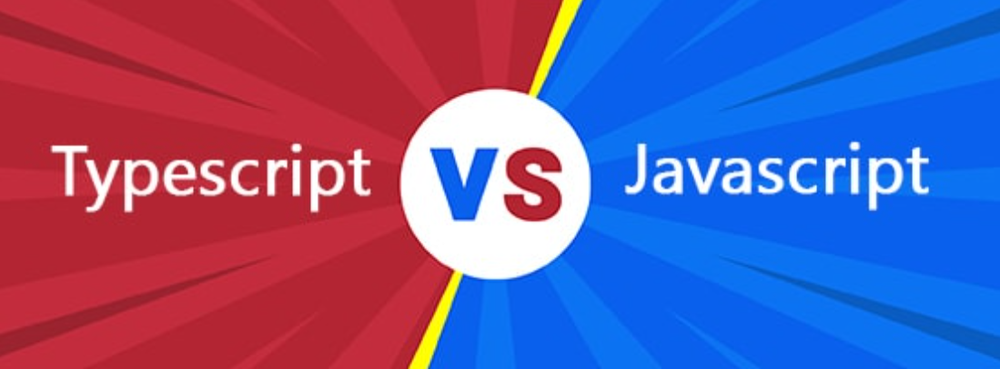

Typescript must aid Javascript developers with large-scale applications
Typescript help as a structuring mechanism for large codebases
Typescript makes easier for teams how works on the same project

TypesScript is an Object oriented programming language /JavaScript is a scripting language
TypeScript has static
typing
/JavaScript does not
TypeScript uses types and
interfaces to describe how data is being used / JavaScript does not
TypeScript has interfaces
which are a powerful way to define contracts within your code /JavaScript does not
TypeScript supports optional
parameters for functions /JavaScript does not
Why should you use Typescript?
Transpiling allows you to generate ECMAScript
Typescript supports JS libraries and API documentation
Typescript introduces static typing
Typescript uses NPM
Typescript is easier to maintain
Typescript makes it easier to use React, Angular, and Vue
How to start?
Install TypeScript
TS Visual Studio Plugin
using NPM (Node Package Manager)
npm install -g typescript
TypeScript Compilers
tsc filename.ts
This will create a JS file
filename.js
Types in Typescript
Any
Built-in
User-defined
Any
let notSure: any = 4;
notSure = "maybe a string instead";
notSure = false; // okay, definitely a boolean
Built-in
Number
let num: number = 0.444;
let hex: number = 0xbeef;
let bin: number = 0b0010;
String
let w = "Value1";
let x = "this is a string with the value " + w;
let y = 'this is a string with the value ' + w;
let z = `this is a string ${w}`;
console.log(w,x,y,z)
Boolean
let yes: boolean = true;
let no: boolean = false;
Undefined
const treasure: undefined = undefined;
Null
const fairElections: null = null;
Void
function warnUser(): void {
console.log("This is my warning message");
}
User-defined
Enum
enum Color {Red, Green, Blue}
// Red = 0, Green = 1, Blue = 2
let c: Color = Color.Green;
console.log(c)
// output: 1
Array
let list: Array< number > = [1, 2, 3];
// valid re-assignment
list = [5, 6, 7];
// invalid
// list = ["hi", "hello"];
let list: number[] = [5, 6, 7] ;
Tuple
// Declare a tuple type
let x: [string, number];
// Initialize it
x = ["hello", 10]; // OK
// Initialize it incorrectly
x = [10, "hello"]; // Error
Classes
class Person{
firstName = "";
lastName = "";
constructor(firstName: string, lastName: string){
this.firstName = firstName;
this.lastName = lastName;
}
fullName(){
return `${this.firstName} ${this.lastName}`
}
}
let p = new Person("John", "Snow");
console.log("Name: ", p.fullName());
// output: Name: John Snow
Interfaces
// class using an interface
interface ClockInterface {
currentTime: Date;
setTime(d: Date): void;
}
class Clock implements ClockInterface {
currentTime: Date = new Date();
setTime(d: Date) {
this.currentTime = d;
}
constructor(h: number, m: number) { }
}
// function using an interface
interface LabeledValue {
label: string;
}
function printLabel(labeledObj: LabeledValue) {
console.log(labeledObj.label);
}
let myObj = {size: 10, label: "Size 10 Object"};
printLabel(myObj);
Conclusion
TypeScript has been increasing in its popularity for the last couple of years. It’s mentioned among the five most
promising languages in 2020. About 60% of JS programmers already use TypeScript.
I'm Junior Front-end Developer,responsible, enthusiastic,
hardworking person. My goal - is to start a junior javascript developer
career and grow to a 'team leader' in 5 years. Constant development and
movement forward, constant study and acquisition of new knowledge. I
have good analytical skills. Easy to learn. I work well in a team.
Skills
HTML/CSS, JavaScript, Git experience in creating an HTML page for
a website based on design layouts skills in binding to the user
interface of scripts that provide rendering and animation JQuery
knowledge of cross-browser layout knowledge of PhotoShop and Figma
experience of responsive layout
Code examples
Github Experience Responsive web page layout Other
examples
Education
On-line “rss-school”. I also study web development from books
or other courses and study English at home.